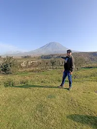

Miguel Gordillo | WDD 130
"Hello! My name is Miguel Gordillo, and I'm from Lima, Peru. I enjoy learning about technology and I love music. I'm currently studying Software Development at BYU. I'm excited to learn and grow in this field. I'm especially interested in software development and how technology can improve everyday life. I enjoy listening to rock music, riding my bike around the city, and watching movies in my free time. I'm also passionate about building creative digital solutions. I'm married, and I value spending quality time with my family. I am very curious by nature, and I like to understand how things work behind the scenes, especially in web development and app design. One of my goals is to become a full-stack developer and contribute to meaningful projects that solve real-world problems. I also enjoy exploring new programming languages and frameworks in my spare time. When I am not coding, I like to relax by going on bike rides along the coast of Lima or spending time listening to music, especially classic and alternative rock. Watching science fiction or tech-themed movies is another thing I love. I believe that technology, creativity, and teamwork can build amazing things.I'm constantly looking for ways to improve my skills, whether it's through online courses, tutorials, or personal projects. Being part of the BYU community has helped me stay motivated and focused on my goals. I am excited for the opportunities this field offers and can not wait to keep learning and creating..".